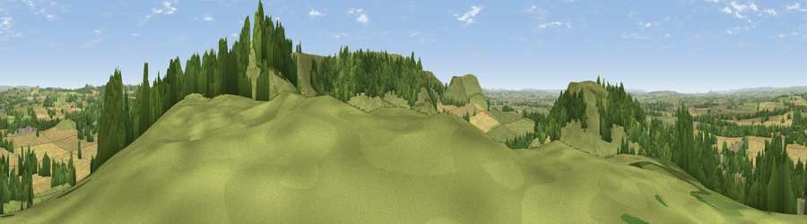

Viewpoint near South Cadbury
#14137 in England · top 27% of its area beats it · near South CadburyWhere it is
The exact computed spot (ST 63625 25225). Click the marker for map links.
The view, rendered

A 360° render of this exact spot computed from the terrain model, tree cover and land cover — summer colours, afternoon light, calibrated against photographs of famous viewpoints. Real trees, hedges and buildings will differ in detail.
The panorama
Grey silhouette: terrain skyline in each direction (720 bearings, Earth curvature and refraction included). Dashed green: skyline with trees (+15 m) and buildings (+8 m) as obstacles. Blue strip: how far the ground is visible on each bearing.
Where the view opens
Wedge length = distance to the farthest visible ground on that bearing (vegetation-aware). Rings at 10, 25 and 50 km.
What fills the view
53% grassland · 24% cropland · 22% woodland · 1% built-up
Angular shares of the visible panorama (visual magnitude), not map area. Landscape diversity 0.46 (0–1 Shannon).
Key numbers
More beautiful places nearby
The staircase of upgrades: each row has a higher view potential than everything closer. Driving times are estimates from straight-line distance, calibrated against real road routing — check an actual route before setting out.
| Place | Direction | Drive | Score |
|---|---|---|---|
| Viewpoint near South Cadbury | ESE · 0 km | ~2 min | 74.8 |
| Parrock Hill | SSW · 2 km | ~4 min | 75.5 |
| The Beacon | S · 2 km | ~5 min | 75.8 |
| Viewpoint near Lamyatt | NNE · 11 km | ~21 min | 77.8 |
| Viewpoint near Hewish | WSW · 27 km | ~44 min | 78.5 |
| Lewesdon Hill | SW · 31 km | ~49 min | 83.3 |
| Beacon Knap | SSW · 39 km | ~58 min | 84.8 |
| The Knoll | SSW · 39 km | ~58 min | 91.0 |
51.02523, -2.52003 · source: screening · position refined by local search. Computed location — check access rights before visiting.